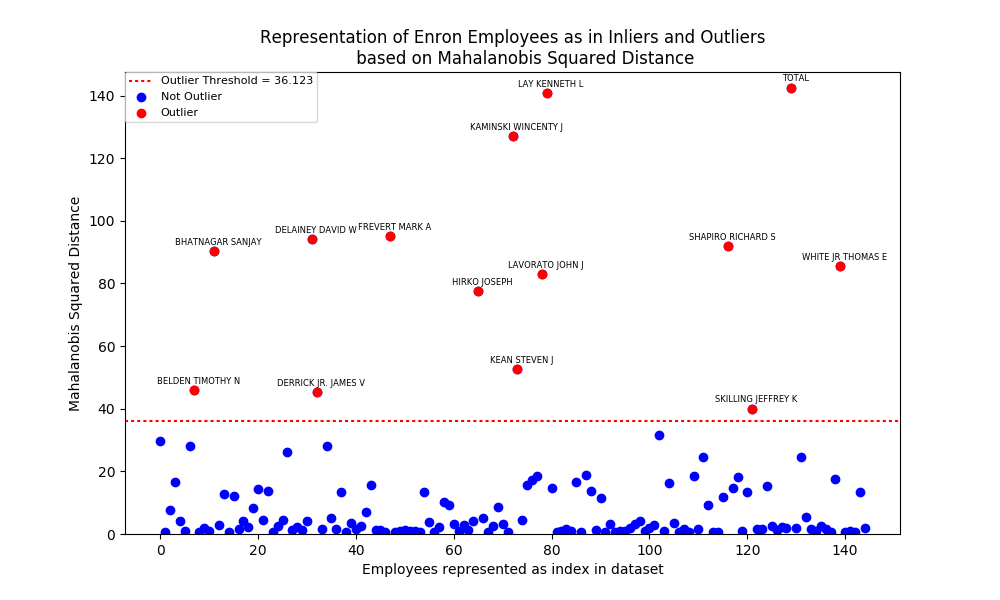
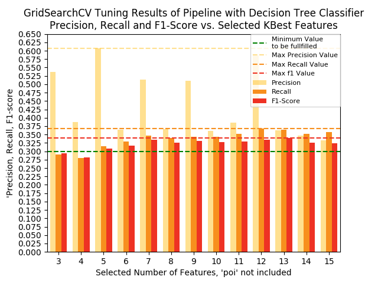
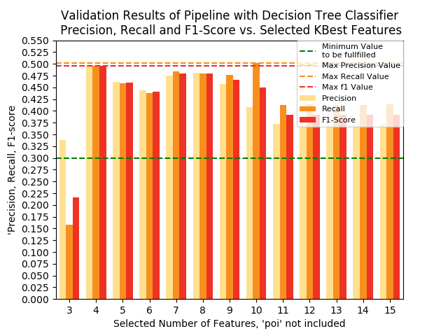
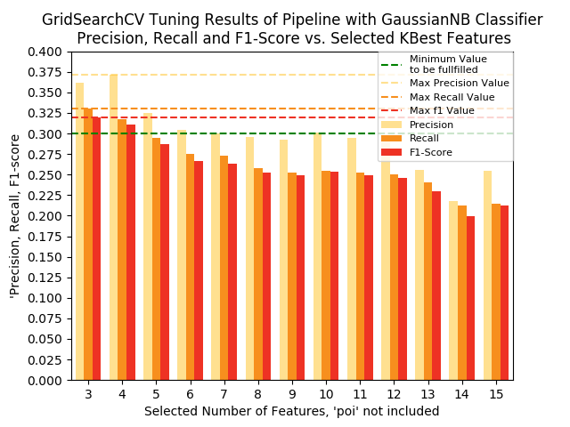
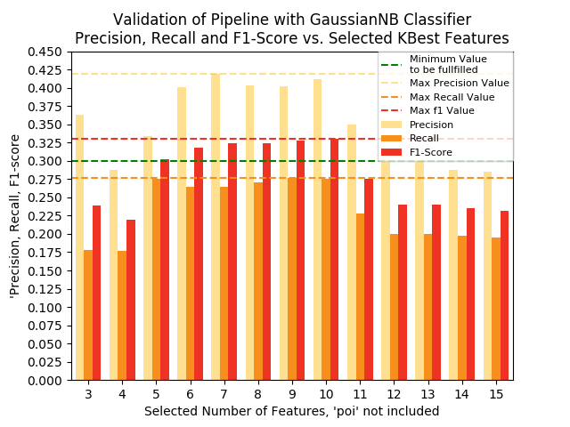

Intro to Machine Learning Final Project
Table of Contents
1 Introduction
Enron Corporation was an U.S. electricity, natural gas, communications, pulp and paper company, with almost 20.000 employees. At the end of 2001, the company declared bankrupty, due to accounting fraud known also as Enron Fraud. The goal of this project is to build an identifier for person of interest (POI), by using machine learning supervised classification algorithms. POI is defined as an individual who was indicted, reached a settlement or plea deal with the government, or testified in exchange for prosecution immunity. POIs are assumed to be strongly involved in Enron Fraud.
2 Dataset
The Enron dataset is derived by combining the Enron email and
financial data. There are 146 points (persons) in dataset. The total
number of features of each person in dataset is 21. They are divided
in three categories financial features
financial features: salary, deferral_payments, total_payments, loan_advances, bonus, restricted_stock_deferred, deferred_income, total_stock_value, expenses, exercised_stock_options, other, long_term_incentive, restricted_stock, director_fees (all units are in US dollars)
, email
features
email features: to_messages, email_address, from_poi_to_this_person, from_messages, from_this_person_to_poi, shared_receipt_with_poi (units are generally number of emails messages; notable exception is ‘email_address’, which is a text string)
and POI label
POI label: poi (boolean)
. There are 18
POIs and 128 non-POIs in dataset.
LOCKHART EUGENE E has been deleted because all his features have
NaN as value. The values of BELFER ROBERT and BHATNAGAR SANJAY
have been corrected. After cleaning the data fifteen pre-selected
features have been used for the investigation. The feature
pre-selection criterion was that a feature should have value
availability greater or equal to 55%. In the table below the features
are presented with their amount respective their percentage of
missing/not missing data.
Number and percentage of missing/non-missing values in features
| Features | Number of NaN | Percent of NaN | Number of Available | Percent of Available |
|---|---|---|---|---|
| salary | 50 | 34.0 | 95 | 66.0 |
| to_messages | 59 | 41.0 | 86 | 59.0 |
| deferral_payments | 107 | 74.0 | 38 | 26.0 |
| total_payments | 20 | 14.0 | 125 | 86.0 |
| exercised_stock_options | 44 | 30.0 | 101 | 70.0 |
| bonus | 63 | 43.0 | 82 | 57.0 |
| restricted_stock | 34 | 23.0 | 111 | 77.0 |
| shared_receipt_with_poi | 59 | 41.0 | 86 | 59.0 |
| restricted_stock_deferred | 127 | 88.0 | 18 | 12.0 |
| total_stock_value | 19 | 13.0 | 126 | 87.0 |
| expenses | 48 | 33.0 | 97 | 67.0 |
| loan_advances | 141 | 97.0 | 4 | 3.0 |
| from_messages | 59 | 41.0 | 86 | 59.0 |
| other | 53 | 37.0 | 92 | 63.0 |
| from_this_person_to_poi | 59 | 41.0 | 86 | 59.0 |
| poi | 0 | 0.0 | 145 | 100.0 |
| director_fees | 129 | 89.0 | 16 | 11.0 |
| deferred_income | 95 | 66.0 | 50 | 34.0 |
| long_term_incentive | 79 | 54.0 | 66 | 46.0 |
| email_address | 34 | 23.0 | 111 | 77.0 |
| from_poi_to_this_person | 59 | 41.0 | 86 | 59.0 |
The pre-selected features are: salary, to_messages, total_payments,
exercised_stock_options, bonus, restricted_stock,
shared_receipt_with_poi, total_stock_value, expenses,
from_messages, other, from_this_person_to_poi, poi,
email_address, from_poi_to_this_person. The feature
email_address was later deleted from the list because it caused a problem
when using function FeatureFormat.
3 Outliers
To find outliers was a very interesting and educational part of the
project. After testing different methods for finding outliers for
univariate, bivariate and multivariate data I decided to use the
method for multivariate data, which is the squared Mahalanobis
distance and \({\chi}^2\)-distribution. The outlier threshold value is
derived from the table
Social Studies 201 Text: Introductory Statistics for the Social Sciences, Appendix J: The Chi Square Distribution. (2004, April 2), Retrieved July 17, 2017, from http://uregina.ca/~gingrich/appchi.pdf
of the \({\chi}^2\)-distribution. The degree of
freedom is the length of my_features list and probability p equal
or less than 0.001.
Possible outliers found with squared Mahalanobis distance and
\({\chi}^2\)-distribution are: BELDEN TIMOTHY N, BHATNAGAR SANJAY,
DELAINEY DAVID W, DERRICK JR. JAMES V, FREVERT MARK A, HIRKO
JOSEPH, KAMINSKI WINCENTY J, KEAN STEVEN J, LAVORATO JOHN J,
LAY KENNETH L, SHAPIRO RICHARD S, SKILLING JEFFREY K, TOTAL
and WHITE JR THOMAS E. The key TOTAL had to be removed from the
dataset, since it is not a person but a spreadsheet
specification. Similar the key THE TRAVEL AGENCY IN THE PARK had
also to be removed as non person in the dataset. Unexpectedly Mr. Pai
Lou L did not appear as outlier and Mr. Skilling has the lowest
Mahalanobis distance of all outliers. In figure below you can see the
inliers and outliers of dataset.
Inliers - Possible Outliers of Enron Dataset

4 Features
Four features salary, bonus, shared_receipt_with_poi,
fraction_to_poi are used to identify if a person is a POI. In the
final features_list poi is added. The feature list has been received by
using a pipeline. The pipeline contained three steps, preprocessing
scaling with MinMaxScaler, univariate feature selection
SelectKBest and the supervised classifier decision tree. This
pipeline was used as estimator in GridSearchCV. In the figures
below you can find the graphical presentation of precision, recall,
and f1-score values from GridsearchCV respectively from validation by using
my_test_classifier results.
GridSearchCV results for selected number of features with classifier decision tree

Validation results for selected number of features with classifier decision tree 
The selected features, their scores and their importances
are shown in the table below. The most important features was bonus.
Selected features, feature scores and feature importances
| Features | SelectKBest (k=4) | Classifier: Decision Tree |
|---|---|---|
| Feature Score | Feature Importance | |
| salary | 15.85873 | 0.06975266 |
| bonus | 30.72877 | 0.62348582 |
| shared_receipt_with_poi | 10.72257 | 0.0 |
| fraction_to_poi | 15.83809 | 0.30676152 |
fraction_to_poi is one of the two own created features that has been
added in the dataset. The second one is fraction_from_poi. Own
created features fraction_from_poi and fraction_to_poi
fraction_from_poi is defined as the fraction of
from_poi_to_this_person and to_messages. fraction_to_poi is
defined as the fraction of from_this_person_to_poi and
from_messages. The reason to create these was that I assumed that as
higher the fraction is as higher is the probability that the person
in email exchange is a POI.
Scaling No scaling was required for the decision tree but I still have done it, because the features in the dataset have ranges which vary wildly. Generally scaling has no impact on the results of decision trees since the splitting is based on proportion of samples within the split ranges and not on absolute values, they are distance independent.
5 Algorithm
Four supervised machine learning algorithms have been investigated: C-Support Vector Classification (SVC), Gaussian Naive Bayes, decision tree, and k-nearest neighbors vote.
A quick validation of different models has shown that two of four
algorithms could generalize unseen data well. Using
StratifiedShuffleSplit the Gaussian Naive Bayes and the decision tree
algorithms got f1-score greater than 0.3.
Quick validation of algorithms
| Classifier | Classification Report | Cross Validation Score | StratifiedShuffleSplit | ShuffleSplit | StratifiedKFold |
|---|---|---|---|---|---|
| scoring f1-score | mean value f1 | mean value f1-score | mean value f1-score | mean value f1-score | |
| C-Support Vector | 0.0 | 0.0 | 0.0 | 0.0 | 0.0 |
| Gaussian Naive Bayes | 0.55 | 0.26667 | 0.33056 | 0.14730 | 0.26667 |
| Decision tree | 0.20 | 0.24 | 0.30429 | 0.30049 | 0.24 |
| k-nearest neighbors vote | 0.0 | 0.0 | 0.09048 | 0.075 | 0.0 |
I decided to look closer at those two classifiers and improve the
model's generalization performance by tuning their parameters. Running
the my_test_classifier.py I end up with the decision tree
algorithm. The Gaussian Naive Bayes failed to fulfill the condition
of 0.3 for precision and recall.
GridSearchCV results of pipeline with Gaussian Naive Bayes classifier

Validation results of pipeline with Gaussian Naive Bayes classifier 
6 Tuning
After finding a model that had generalized well unseen data, the next step was to optimize the values of its parameters in order to achieve better model/algorithm performance. This is known as tuning of parameters. The optimization is done by testing various parameters values. For a successful testing it is important to identify the parameters which have a strong impact on model/algorithm performance and their values to evaluate. Otherwise the parameter tuning could lead to suboptimal model performance.
I tuned a pipeline with steps preprocessing MinMaxScale, feature
selection SelectKBest and classifier decision tree with
GridSearchCV. GridSearchCV optimizes the estimator's
parameters, in this case the parameters of a pipeline. It
computes all combinations of parameters values and returns the
best model performance. In this investigation I used for tuning a
for-loop iterating over k, where k is the number of features
selected by SelectKBest. Inside the for-loop I used GridSearchCV. I
wanted to see for each iteration the chosen feature set and the model
performance by GridSearchCV and by validation function
my_test_classifier. This allowed me to manually choose the model
with minimum number of features and the best performance. Table below
shows the parameters of the model and their values that have been
tested.
Parameters and tested values
| Parameter | Test Values |
|---|---|
| feature_selection__k | [k from for-loop] |
| classifier__criterion | ['gini', 'entropy'] |
| classifier__splitter | ['best', 'random'] |
| classifier__max_depth | [2] |
| classifier__random_state | [42] |
The model that I have chosen consists of four features, the decision
tree classifier had classifier__criterion entropy,
classifier__splitter best and the model performance f1 was equal to
0.496. This value was the max value among all f1-scores received from
validation, see figure Validation results for selected number of
features with classifier decision tree.
7 Validation
An important part of machine learning is the validation of the model. It is a method to evaluate how well the trained model performs on unseen data.
One classic mistake is to use the same data for training and testing to validate a model. By separating the data into train and test set the risk for overfitting can be reduced substantially. Using cross-validation the data is split into training, validation and testing set, which further reduces the risk for overfitting.
I used my_test_classifier which is a modification of
test_classifier from tester.py to validate the
model. my_test_classifier uses cross-validation,
StratifiedShuffleSplit. Running the validation function I received
the following metrics: accuracy, precision, recall, f1-score, f2-score,
total number of predictions, number of true positives, number of false
positives, number of false negatives and number of true negatives.
8 Evaluation metrics
The evaluation metrics of the model using my_test_classifier were
precision with average performance of 0.495, recall with average
performance of 0.497, and f1-score with average performance of
0.496.
Precision is the number of correctly predicted POIs among the total number of predicted POIs. Recall is number of correctly predicted POIs among all actual POIs. F1-score is defined as the harmonic mean of the precision and recall. \(f_1 = 2\cdot\frac{precision \cdot recall}{precision + recall}\)
The precision, recall and f1-score have almost the same value, approximately 0.50. According to recall value, almost the half of POIs are detected correctly among the total number of actual POIs. This is not a good result but still much better than 0.3 which was the required condition. I think the small size of dataset and the low number of POIs in it, are the reason for the moderate prediction scores.
9 References
A Multivariate Outlier Detection Method. Retrieved July 17, 2017, from http://www.statistik.tuwien.ac.at/public/filz/papers/minsk04.pdf
Enron. Retrieved July 17, 2017, from https://en.wikipedia.org/wiki/Enron
Garreta, R., & Moncecchi, G. (2013). Learning scikit-learn: Machine Learning in Python. Birmingham: Packt Publishing.
Massaron, A. B. (2016). Python Data Science Essentials - Second Edition. Birmingham: Packt Publishing.
Müller, A. C., & Guido, S. (2016). Introduction to machine learning with Python a guide for data scientists. Sebastopol: O'Reilly Media, Inc.
Sensitivity and specificity. (2017, July 11). Retrieved July 17, 2017, from https://en.wikipedia.org/wiki/Sensitivity_and_specificity
Scikit-learn. Retrieved July 17, 2017, from http://scikit-learn.org/stable/index.html
Social Studies 201 Text: Introductory Statistics for the Social Sciences, Appendix J: The Chi Square Distribution. (2004, April 2), Retrieved July 17, 2017, from http://uregina.ca/~gingrich/appchi.pdf